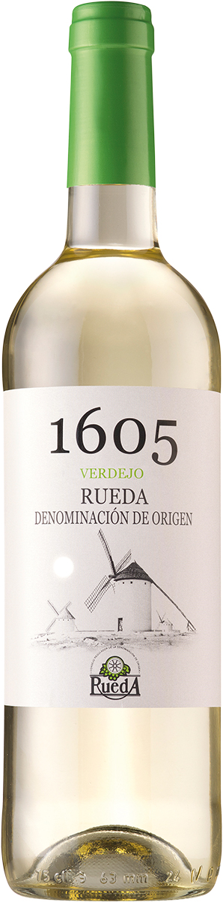

Глинтвейн — это очень вкусный алкогольный горячий напиток, основой которого является красное вино,
нагретое до 50-60 °С, с добавлением сахара и пряностей. Глинтвейн Glühwein изготавливается из натуральных
ингредиентов по классическому немецкому рецепту. Его аромат яркий, с оттенками специй. Во вкусе чувствуются
тона корицы, гвоздики, апельсина и имбиря. Этот прекрасный напиток можно пить как в горячем, так и в холодном
виде. Он просто создан для самых теплых встреч! Рекомендуется подавать с печеньем и пирожными.
Страна:
Испания
Цвет:
Белое
Объем:
0.75л
Алкоголь:
13%
Температура подачи:
10
Производитель:
Bodegas Naia

Вино 1605 Вердехо DO бел.сух
Описание
Очень соблазнительное вино из испанского региона Руэда. Изготовлено из винограда сортов Вердехо (85%) и Совиньон Блан (15%).
Обладает весьма уникальным характером, отличительной чертой которого является аромат тропических белых фруктов, с легким оттенком фенхеля и свежей травы.
Завершается прозрачным и приятным послевкусием. Идеально сочетается с рыбой на гриле, молодым картофелем или креветками в чесночном соусе.
Перед подачей лучше охладить примерно до +10-12 °С. Попробуйте! Это будет освежающий восторг!